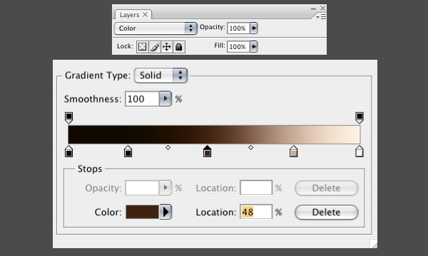
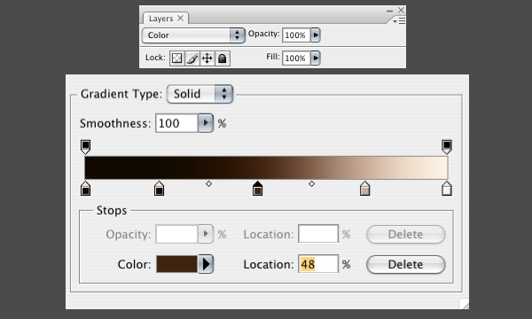
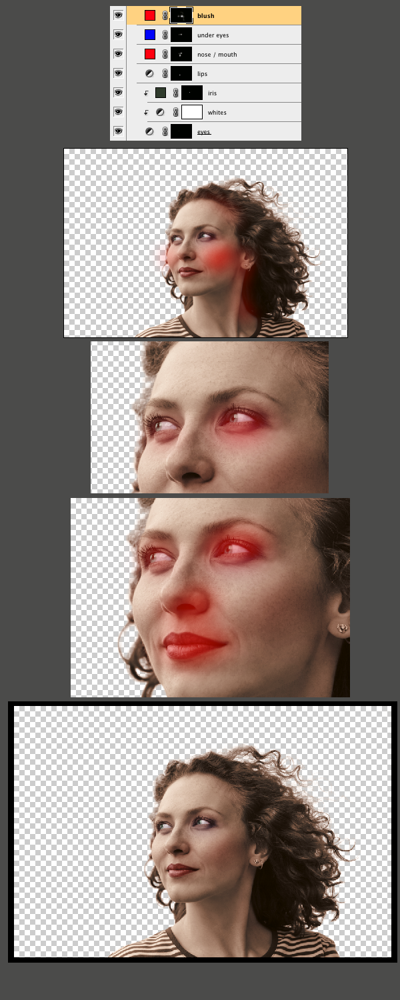
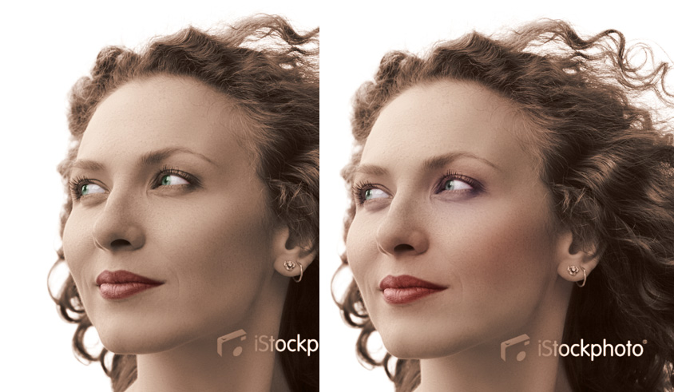

- 进入通道，复制red 通道
- 调色，产生强烈对比
- 浮动选区，这样就选择了全部头发
- 与以前的外轮廓叠加，形成完整选区
- 创建 Gradient Map 调整层
- 设置调整层属性为 Color
- 添加渐变
 


- 加亮，加粉色调的Gradient Map 调整层
调整为绿色
- 建 2px 的选区
- 填充绿色，设置图层属性为 color
- 勾出轮廓
- 添加 Gradient Map 调整层（属性 Normal， Fill65%）
- 用 20-40px 羽化的笔刷选择面颊各部位
- 填充颜色
鼻子，面颊为红色，眼睛下面蓝色 - 设定图层属性为 color，调节透明度

- 50px 羽化建选区
- 系列调节颜色
- 见文件夹内调整动作